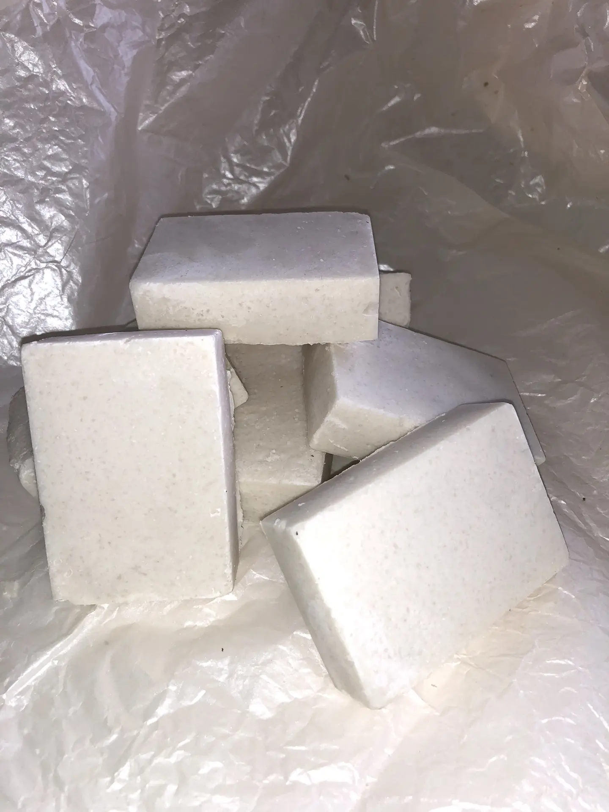
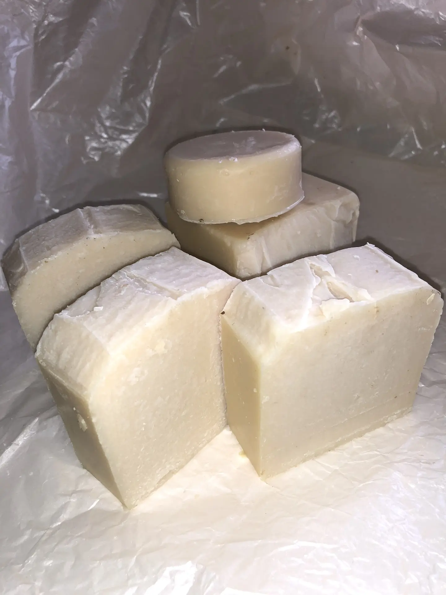
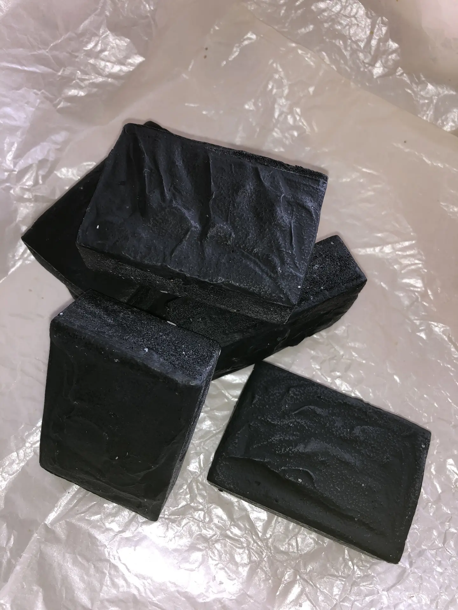
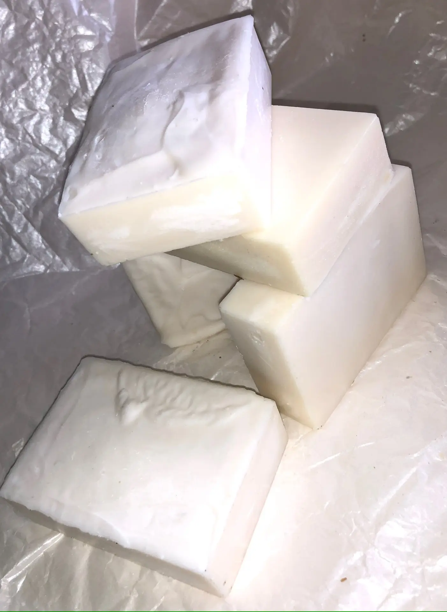

📞 Телефон: +7 917 775-26-91 (Айгуль)
📷 Instagram: Перейти
✈️ Telegram: перейти
✏️ Вконтакте: перейти
🇷🇺 MAX: +7 917 775-26-91 (Айгуль)
Instagram: @yaxina777
Лучшее мыло для здоровья и красоты кожи



